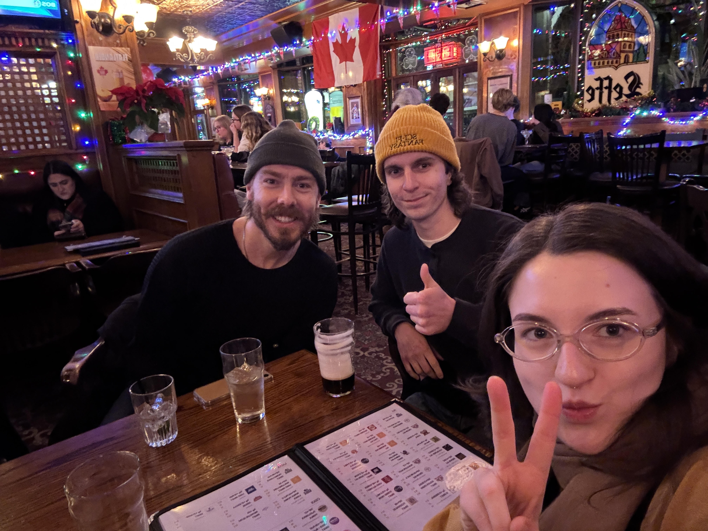

Daily Music Pick: Burt Bacharach - Walk The Way You Talk
Daily Music Pick: Burt Bacharach - Walk The Way You Talk
 Daily Photo to Consider:
Daily Photo to Consider:
BeBruce.Org Reader Appreciation:
Three BeBruce.Org readers enjoying their evening.

Questions, Comments, Suggestions to the editor?
Email them to Creator@BeBruce.Org
Select responses could be featured on BeBruce.Org